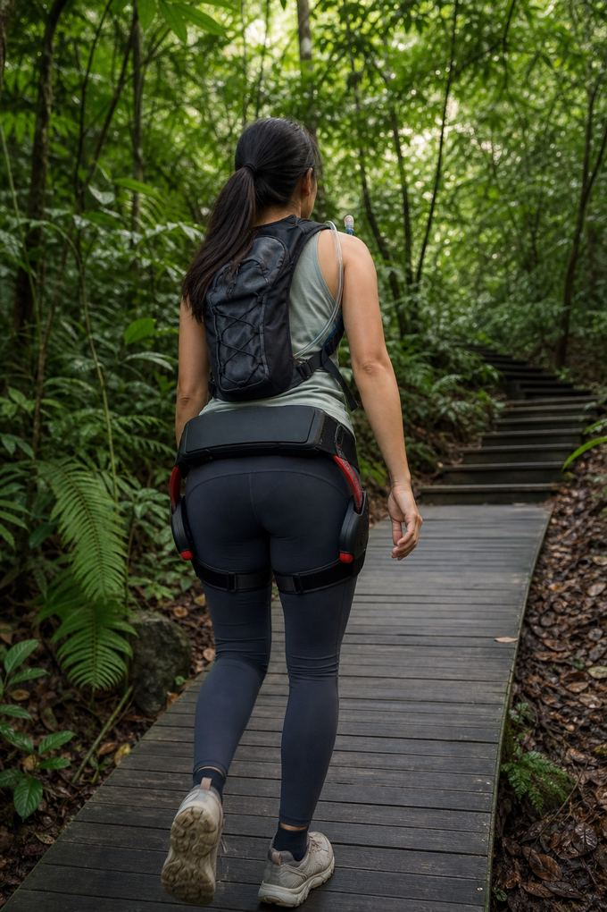

Làm sao đo được khung xương ngoài hỗ trợ hông có giúp ích khi leo một ngọn đồi như Bukit Timah?
Leo cùng một lộ trình hai lần, vào những ngày tương tự, với cùng nhịp độ: một lần không có hỗ trợ và một lần có. Ghi lại năm điều: thời gian lên đỉnh, nhịp tim trung bình và cao nhất nếu bạn có đồng hồ, số lần dừng nghỉ, mức độ vất vả theo thang 0 đến 10, và cảm giác ở chân khi xuống. Lặp lại cặp leo ít nhất một lần nữa. Nếu các lần leo có hỗ trợ luôn nhẹ nhàng hơn ở cùng nhịp độ, thiết bị đang có tác dụng với bạn. Con số "giảm tới 35% năng lượng khi leo dốc" của nhà sản xuất là một công bố cần kiểm chứng, không phải lời hứa.
Vì sao nên đo thay vì tin vào bức ảnh trên đỉnh
Quảng cáo khung xương ngoài cho hoạt động ngoài trời đầy những bức ảnh trên đỉnh núi. Chúng cho bạn biết ai đó đã lên tới đỉnh, chứ không cho biết thiết bị đã thay đổi gì trên đường đi. Nếu bạn đang cân nhắc khung xương ngoài hỗ trợ hông có động cơ để leo núi, câu hỏi hữu ích hẹp hơn: trên một con dốc tôi quen, với nhịp độ tôi chọn, nó nhẹ hơn bao nhiêu?
Đồi Bukit Timah là một phép thử tốt. Cao 163 m, đây là ngọn đồi tự nhiên cao nhất Singapore, nằm trong Khu bảo tồn thiên nhiên Bukit Timah do NParks quản lý, và lối chính lên đỉnh ngắn và dốc. Nhờ vậy nó đủ dài để khiến bạn mệt và đủ ngắn để lặp lại.
Nguyên tắc của một phép thử công bằng
- Cùng lộ trình: xuất phát và kết thúc ở cùng một điểm, đi cùng một lối lên đỉnh.
- Cùng nhịp độ: nguyên tắc khó nhất. Đi ở nhịp độ vẫn nói chuyện được, và nếu có đồng hồ, hãy nhắm tới thời gian tương đương.
- Điều kiện tương tự: cùng thời điểm trong ngày, thời tiết tương tự, giấc ngủ và ăn uống tương tự.
- Hồi phục hoàn toàn: leo hai lần vào hai ngày khác nhau, hoặc ít nhất nghỉ thật lâu giữa hai lần.
- Lặp lại: một cặp leo có thể là may mắn. Hai cặp trở lên mới cho thấy xu hướng.
Đổi thứ tự: tuần này leo không hỗ trợ trước, tuần sau leo có hỗ trợ trước.
Năm con số cần ghi lại
- Thời gian lên đỉnh, từ lúc bắt đầu đến khi kết thúc.
- Nhịp tim: trung bình trong lần leo và mức cao nhất, nếu bạn có đồng hồ hoặc đai đo ngực.
- Số lần dừng nghỉ: bạn đã dừng bao nhiêu lần.
- Mức gắng sức: cảm thấy vất vả thế nào khi lên đỉnh, từ 0 (không gì cả) đến 10 (vất vả nhất có thể).
- Lúc xuống: cảm giác ở chân khi xuống dốc, từ 0 (còn khỏe) đến 10 (run rẩy).
Ghi lại ngay khi lên tới đỉnh và khi kết thúc.
Cách đọc kết quả
Nếu bạn giữ nguyên nhịp độ, hãy xem nhịp tim và mức gắng sức. Nhịp tim thấp hơn và điểm gắng sức thấp hơn cùng lúc cho thấy lần leo tốn ít sức hơn. Nếu bạn để mình đi nhanh hơn khi có hỗ trợ, hãy xem thời gian và mức gắng sức cùng nhau: nhanh hơn với cùng mức gắng sức cũng có nghĩa là nhẹ hơn.
Nhịp tim chỉ là thước đo tương đối. Nóng, ẩm, caffeine và giấc ngủ đều làm nó thay đổi. Đừng suy diễn nhiều từ một cặp leo; hãy tìm cùng một xu hướng qua nhiều lần. Hướng dẫn của chúng tôi về cách đo mức tiết kiệm năng lượng giải thích vì sao phòng thí nghiệm đo bằng hơi thở chứ không phải nhịp tim, và vì sao kết quả chênh lệch.


Thiết bị làm gì trên kiểu dốc này
ExoStride US-H-1.0Pro bổ sung tới 16 Nm ở hông khi mỗi chân nâng lên (số liệu theo bảng thông số). Thiết bị nhận biết địa hình dốc và tự động tăng hỗ trợ. Với những đoạn leo dốc gắt, kéo dài, nhà sản xuất công bố giảm tới 35% năng lượng. Đó là công bố của nhà sản xuất trong điều kiện của họ; điều hướng dẫn này nói đến là phép đo của chính bạn.
Khi xuống dốc, thiết bị giảm hỗ trợ để không bao giờ đẩy bạn về phía trước. Hãy kỳ vọng khác biệt lớn hơn ở chiều lên.
Kết quả không cho bạn biết điều gì
- Nó không cho biết thiết bị hoạt động thế nào trong chuyến leo núi kéo dài nhiều giờ; khi đó pin và cái nóng sẽ ảnh hưởng. Bảng thông số ghi tới 4 giờ hỗ trợ mỗi lần sạc, và leo dốc gắt tốn pin hơn.
- Nó không đo được cái giá của việc mang thêm 2,4 kg trên những đoạn bằng phẳng hơn.
- Nó không thay thế việc tập luyện. Nếu bạn đang chuẩn bị cho một chuyến leo không hỗ trợ ở nước ngoài, hãy tập cả khi không có hỗ trợ.
Bài so sánh với gậy leo núi của chúng tôi nhìn cùng câu hỏi từ phía ngược lại: gậy chuyển sức lực đi đâu và hỗ trợ hông giảm sức lực ở đâu.
Lưu ý thực tế trên đồi
- Đi sớm để tránh nóng và đông người.
- Mang theo nước, và quay lại nếu thấy không khỏe.
- Khu bảo tồn có quy định dành cho du khách; hãy kiểm tra trên NParks tình trạng đường mòn và giờ mở cửa hiện tại trước khi đi.
- Buổi thử có thể được sắp xếp trên đường mòn, để đội ngũ cài đặt mức hỗ trợ cho địa hình dốc.
Mẫu một trang nhật ký
Ghi nhật ký theo cùng một định dạng mỗi lần để dễ so sánh các lần leo. Mỗi lần leo một dòng là đủ:
- Ngày, giờ xuất phát và thời tiết, ví dụ "Thứ Bảy 7:10, 27°C, trời âm u".
- Có hỗ trợ hay không, và mức hỗ trợ nếu bạn đã thay đổi.
- Thời gian lên đỉnh, số lần dừng nghỉ, nhịp tim trung bình và cao nhất.
- Mức gắng sức trên đỉnh và cảm giác ở chân khi xuống, mỗi mục từ 0 đến 10.
Sau bốn lần leo, bạn sẽ có hai cặp công bằng. Trước tiên so sánh không hỗ trợ với có hỗ trợ trong từng cặp, rồi xem xét giữa các cặp. Một khoảng chênh ổn định về mức gắng sức hoặc nhịp tim ở cùng nhịp độ mới là kết quả đáng kể; một ngày đi nhanh thì không.